How Bitcoin works?¶
Transactions¶
Let’s try to understand how blockchain works with a simple transaction over a Blockchain network.
{kind=link}
Suppose James wants to send 5 BTC to his friend Kevin. Now, this transaction is broadcasted in the form of a digital message.
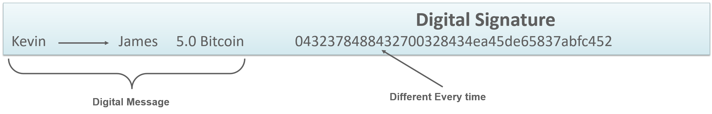{kind=link}
The digital message has a unique signature. Just like your signature provides the proof of ownership of the document, similarly, digital signature provides the proof that the transaction is genuine. Now this generated transaction is broadcasted to the network where it propagates peer to peer.
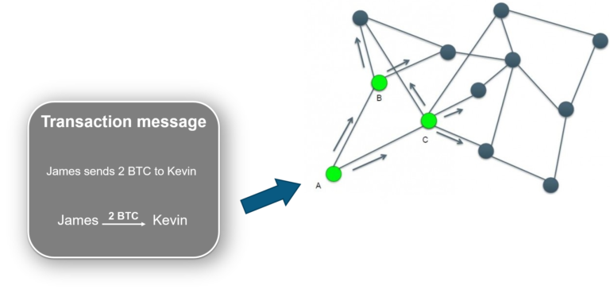{kind=link}
Suppose the above transaction is first received by node A in the network.
Independent Verification of Transactions¶
Before sending transactions to its neighbors, each bitcoin node that gets the transaction will initially verify the transaction.
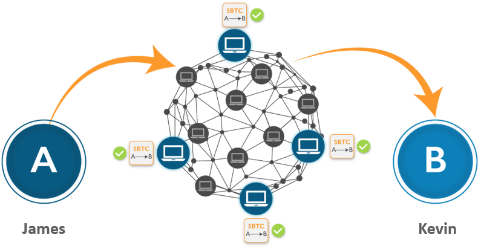{kind=link}
This guarantees only valid transactions are propagated across the system while invalid transactions are disposed of at the first node which receives them. Every node confirms each transaction against a long agenda of criteria.
Aggregation of Verified Transactions¶
Independent aggregation of those transactions into new blocks by mining nodes combined with exhibited calculation through a proof-of-work algorithm.
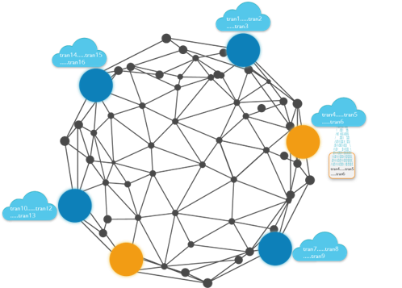{kind=link}
- By autonomously confirming every transaction as it is received and before propagating it, each node fabricates a pool of valid (however unconfirmed) transactions known as the transaction pool, memory pool or mempool
- Transaction reaches Mining nodes it collects, validates, and relays new transactions just like other nodes
- Unlike other nodes, miner node will then aggregate these transactions into a candidate block
Let’s understand this better with an example. Let’s say Andy is a miner. (A mining node maintains a local copy of the blockchain, the list of all blocks created since the beginning of the bitcoin system in 2009)
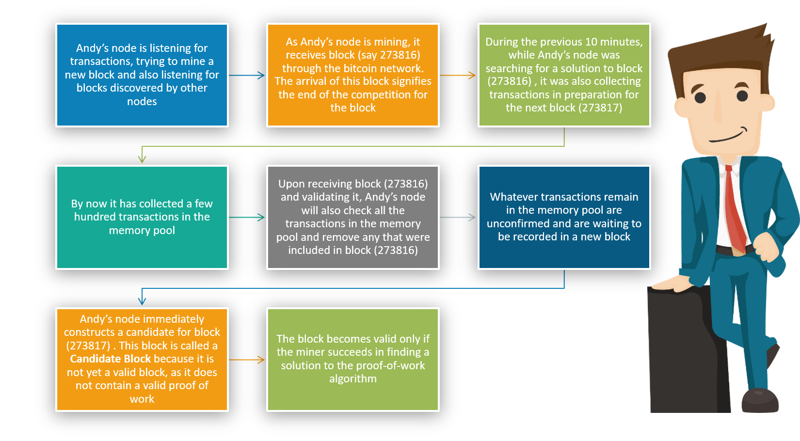{kind=link}
Now, after collecting all the transactions in a block, Andy needs to construct the block header. Now this step is important to understand how blockchain works
Constructing a Block Header¶
To construct the block header, the mining node needs to fill in six fields, as listed in the table:
| Size | Field | Description |
|---|---|---|
| 4 bytes | Version | To construct the block header, the mining node needs to fill in six fields, as listed |
| 32 bytes | Previous Block Hash | A reference to the hash of the previous (parent) block in the chain |
| 32 bytes | Merkle Root | A hash of the root of the Merkle tree of this block’s transactions |
| 4 bytes | Timestamp | The approximate creation time of this block (seconds from Unix Epoch) |
| 4 bytes | Difficulty Target | The proof-of-work algorithm difficulty target for this block |
| 4 bytes | Nonce | A counter used for the proof-of-work algorithm |
Once Andy’s node has all the fields filled in the block header, Andy started Mining the block.
Mining of a Block¶
- With all the other fields filled, the block header is now complete and the process of mining can begin
- The goal is now to find a value for the nonce that results in a block header hash that is less than the difficulty target
- The mining node will need to test billions or trillions of nonce values before a nonce is found that satisfies the requirement
Now that a candidate block has been constructed by Andy’s node, it is time for Andy’s hardware mining rig to “mine” the block, to find a solution to the proof-of-work algorithm that makes the block valid.
Proof of work is a piece of data which is difficult(costly, time-consuming) to produce but easy for others to verify and which satisfies certain requirements.
Finding the Puzzle- Why is it hard?¶
- The SHA-256 is a one-way function(hash) hence, brute force is the only way to a particular output value
- On an average, it takes many random guesses to find a solution and thus the challenge is tough
- It takes around 10 minutes on an average for someone to find the special key to the solution
To keep the coin distribution predictable, puzzles becoming increasingly difficult to solve when more people work on them.
Now, to validate the block according to the proof-of-work algorithm, Andy’s mining node has to reach the difficulty target.
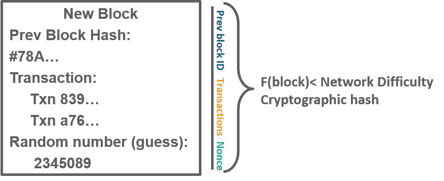{kind=link}
Let’s see how the difficulty is represented.
Difficulty Representation¶
- The block contains the difficulty target, in a notation called “difficulty bits” or just “bits“
- Let’s say a block has 0x1903a30c as the difficulty bits. This notation expresses the difficulty target as a coefficient/exponent format, with the first two hexadecimal digits for the exponent and the next six hex digits as the coefficient
The formula to calculate the difficulty target from this representation is:
{kind=link}
So, such is the difficulty coefficient that Andy’s mining node has worked really hard to reach the difficulty target. Let’s see what happens next.
Successfully Mining the Block¶
- Andy has several hardware mining rigs, each running the SHA256* algorithm in parallel at incredible speeds
- The mining node running on Andy’s desktop transmits the block header to his mining hardware, which starts testing trillions of nonces per second
- Almost 11 minutes after starting to mine block, one of the hardware mining machines finds a solution and sends it back to the mining node
- Immediately, Andy’s mining node transmits the block to all its peers
- They receive, validate, and then propagate the new block. As the block ripples out across the network
Now that that block is propagated in the network, each full nodes independently verifies the block
Independent Confirmation of Each Block¶
- In bitcoin’s consensus mechanism, each new block is validated independently by every node on the network
- This ensures that only valid blocks are propagated on the network
- Nodes validate the block by checking it against a long list of criteria that must all be met
Assembling and Selecting Chains of Blocks¶
Once a node has validated a new block, it will then attempt to assemble a chain by connecting the block to the existing blockchain
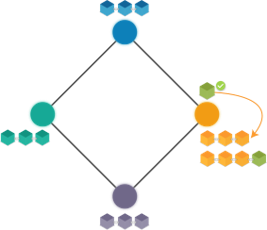{kind=link}
In the network shown above, once the node (in orange) validates the block, it assembles the chain by connecting the block to the existing blockchain
Once the block is verified by the network, it becomes the part of the blockchain and for successfully solving the block puzzle the miner is rewarded.
Miners Reward¶
- Since Miners use their valuable resources to validate the block, they are given a monetary award
- In case of Bitcoin, they get some newly created Bitcoins as a reward

Now, the question arises, what happens in the case when more than one block gets solved at the same time?
Yes, this is possible indeed! In such case, several branches exist.
Several Branches¶
- Although the problem is tough, however, there are chances that more than one block will be solved at the same time
- Several branches in the blockchain are possible in such cases
- Everyone should simply build the blocks on top of the first block that they receive

- Other Nodes may have received the blocks in a different order
- They will be building on the block they first receive
{kind=link}
- The tie gets broken when someone solves the next block because it is very rare for this situation to happen multiple times in a row
{kind=link}
- Blockchain quickly stabilizes in this situation
- The general rule is to switch to the longest chain available
{kind=link}
The Blockchain quickly Stabilizes. Every node is in agreement with the current state of the ledger.
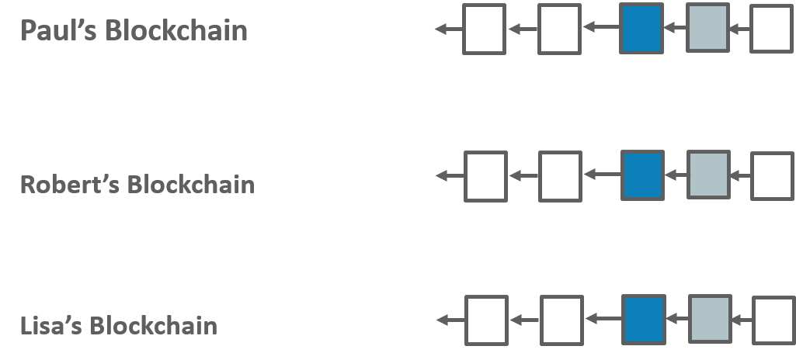{kind=link}
Alright, so consensus rules save the blockchain network from such ambiguity.
Now, another question arises here, what if someone tries to alter any transaction or records in the system?
What if Someone tries to Hack the System?¶
Once a block is solved the cryptographic hash output becomes the identifier of that block.
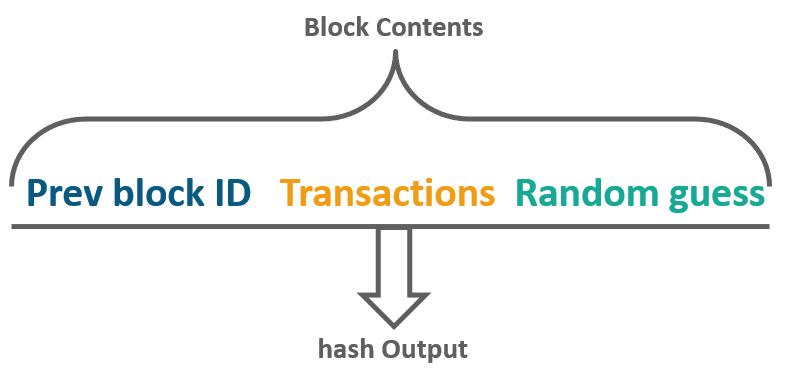{kind=link}
Since Blockchain is a back-linked distributed database of records. When a block is formed, the cryptographic hash output becomes the identifier of that block, which ties into the next block, creating a chain of blocks.
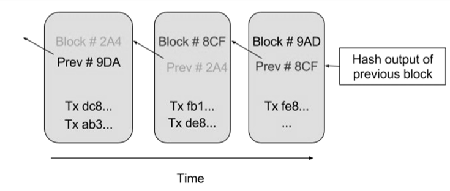{kind=link}
Hence, the blockchain is secured by the strong cryptographic algorithm and there is no way to alter any record.
If someone tries to alter any transaction in any of the blocks, the hash of the block changes and consequently hash of all the previous blocks will change. The nodes will not arrive at **the consensus and hence, the fraud can easily be detected**
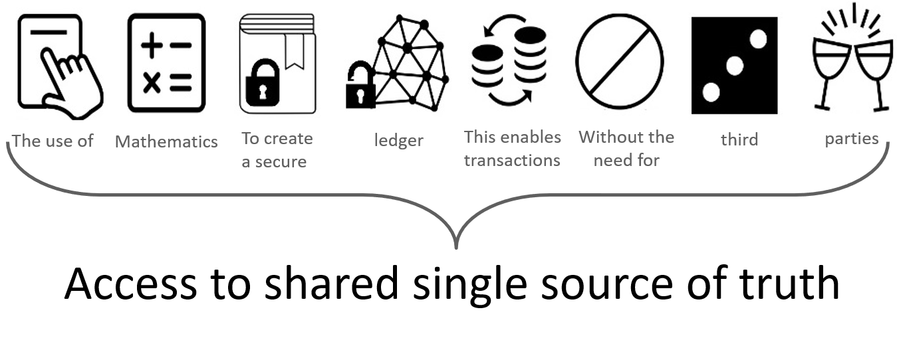{kind=link}